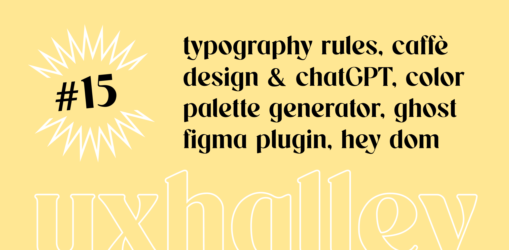

UX Halley, newsletter per designer
uxhalley, edizione #15
24 aprile 2023 — UX Halley: una newsletter bisettimanale che raccoglie news e links utili sulla UX. Le regole sono semplici: max 5 minuti di lettura; se ti interessa, lo approfondisci; se ti piace, lo condividi; a prescindere ci vediamo tra due settimane. Facile facile.
Immagine di copertina dell'edizione di UX Halley, newsetter per designer
Link per designer suggerito nell'edizione di UX Halley, newsletter per designer
tipografia e UI
Un articolo, che sembra quasi un libro, che parla di #tipografia e di applicazioni in ambito digitale. Un interessantissima disamina per approfondire dettagli che talvolta sono scontati e molte volte fa bene rispolverare.
Link per designer suggerito nell'edizione di UX Halley, newsletter per designer
prompt per GPT
Caffè Design ha pubblicato un carosello su Instagram con dei consigli davvero pratici per usare #chatgpt come un booster per il workflow di chi si occupa di design, con esempi pratici da copiare e incollare.
Link per designer suggerito nell'edizione di UX Halley, newsletter per designer
grafico a torta?
Quante volte hai dovuto presentare dati e fare a mano un grafico? Fastidioso eh? Beh, con questo strumento ti basta inserire i dati, scegliere qualche semplice parametro e "ta daa", esportarlo per gli usi più comuni.
Link per designer suggerito nell'edizione di UX Halley, newsletter per designer
palette e font pairing
Un tool online dalla grafica semplice e dalla UX minimale che con qualche click ti propone delle coppie di font accessibili, coerenti e anche inaspettate. La cosa interessante è come te le presenta.
Link per designer suggerito nell'edizione di UX Halley, newsletter per designer
componenti di UI
Prendendo in esame 39 #designsystem dei più famosi e usati al mondo è stata realizzata questa libreria di componenti dove per ognuno c'è descritto tutto il necessario: best practies, anatomie, dimensioni, comportamenti, ecc.
Link per designer suggerito nell'edizione di UX Halley, newsletter per designer
ghost
Dì la verità: quante volte hai trovato un kit per #figma interessante ma era già "UI ready"? E quante volte hai pensato: beh, troppa UI, mi serve meno dettaglio, ora devo rifare il wireframe. Ecco, questo plugin è la risposta.
Link per designer suggerito nell'edizione di UX Halley, newsletter per designer
design play change
Un gioco per designer realizzato da Counterprint (che ne vende tanti altri, link che scotta!) che offre 36 metodi per organizzare workshop e attività di co-design in ambito #designthinking. E poi, è veramente bello.
Link per designer suggerito nell'edizione di UX Halley, newsletter per designer
bonus track
Conosco Domenico Polimeno da qualche tempo, ci siamo incrociati forse una volta live e scritti sempre in digitale. Domenico è una fonte inesauribile di contenuti di altissima qualità, suoi o trovati online, e li pubblica in Hey Dom.